Im Menüpunkt "E-Billing-Import/ XML-Import (mit Signaturprüfung)" können signierte Rechnungen sowohl als Belege (Einkaufsbelege) als auch als Buchungsstapel (Eingangsrechnungen) importiert werden. Beim Einlesen der Dateien erfolgt die Prüfung der Signatur auf ihre Gültigkeit.
Zur Prüfung der Gültigkeit der Signatur müssen auch die so genannten Widerrufslisten (Revocation Lists) miteinbezogen werden. Darin werden jene Zertifikate angeführt deren Gültigkeit widerrufen wurde. Mögliche Gründe für eine Widerrufung eines Zertifikates können sein:
ü Person ist aus der Organisation ausgeschieden, der betriebene Server existiert nicht mehr, es erfolgte eine Änderung des Firmenwortlauts usw.
ü der Verdacht besteht, dass das Zertifikat von Dritten missbraucht wird.
ü das Zertifikat ist nicht mehr benutzbar ist weil z.B. das dazugehörige Passwort nicht mehr existiert weil die Software außer Betrieb genommen wurde.
ü die verwendeten Signaturverfahren nicht mehr als technisch sicher angesehen werden.
Werden nun Dateien von Zertifikatsdiensteanbieter eingelesen deren Widerrufsliste in der WinLine noch nicht vorhanden oder nicht aktuell ist, wird versucht diese zu aktualisieren.
Dazu erfolgt eine entsprechende Meldung die mit Ja bestätigt werden muss, da ansonsten die XML-Dateien grundsätzlich nicht importiert werden können.
Weitere Informationen zur Widerrufsliste finden Sie auch unter "Widerrufsliste".
Werden XML-Dateien als Belege importiert so handelt es sich dabei um "nicht gerechnete/nicht gedruckte" Belege. Werden XML-Dateien als Buchungen importiert so werden die daraus entstehenden Buchungszeilen im jeweiligen FAKT-Monatsstapel (z.B. -7 Buchungsübernahme Juli) abgestellt.
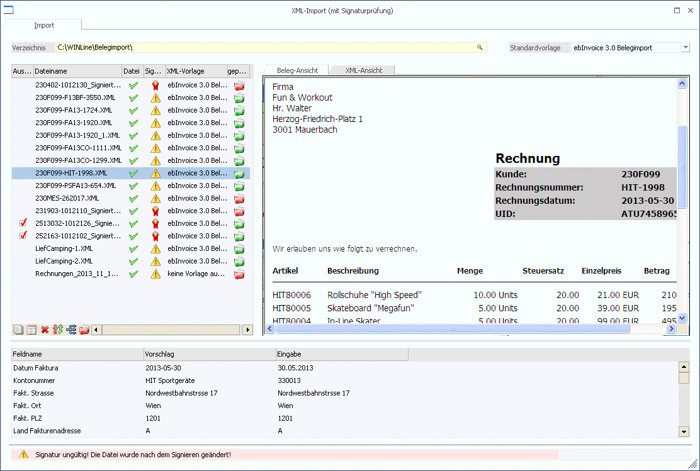
Ø Verzeichnis
Im Eingabefeld muss das entsprechende Verzeichnis angegeben werden, aus dem die Dateien importiert werden sollen. Zur Suche nach Verzeichnissen steht der Matchcode zur Verfügung.
Beim Öffnen des Menüpunktes wird jenes Verzeichnis vorgeschlagen das der User zuletzt verwendet hatte und event. darin befindliche Daten werden automatisch eingelesen. Gibt es im Verzeichnis eine XML-Datei die mehrere XML-Dateien beinhaltet, so wird beim Einlesen diese Datei automatisch aufgesplittet.
Ø Standardvorlage
Als Standardvorlage kann eine beliebige Importvorlage gewählt werden die beim Einlesen der einzelnen Dateien zugewiesen werden soll.
Diese Hinterlegung der Standardvorlage wird für das angegebene Importverzeichnis und den aktiven User gespeichert und bei erneuter Auswahl des Importverzeichnisses wieder vorgeschlagen.
D.h. beim Öffnen des Menüpunktes kann zum einen bereits das Importverzeichnis durch einen vorangegangenen Import automatisch vorgeschlagen werden, zum anderen durch einen vorangegangenen Import die Standardvorlage bereits definiert sein, und somit die Dateien eingelesen, Standardvorlage zugewiesen, die Signatur automatisch geprüft und die Dateien (im besten Fall) als gültig zum Import gekennzeichnet werden (Checkbox "Auswahl" automatisch aktiviert).
Tabelle im linken Fensterteil
Wurde im Feld "Verzeichnis" ein gültiges Verzeichnis angegeben und befinden sich in diesem auch entsprechende XML-Dateien so werden diese automatisch eingelesen und in der Tabelle aufgelistet.
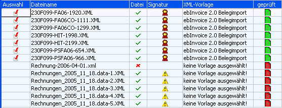
Ø Auswahl
Diese Option wird automatisch aktiviert sobald die nebenstehende Datei als "gültig" gekennzeichnet wurde. D.h. XML-Vorlage konnte korrekt zugewiesen werden, alle so genannten MUSS-Felder wurden lt. XML-Vorlage befüllt und die Signatur dieser Datei ist gültig.
Zeilen die das Kennzeichen "Auswahl" gesetzt haben können in weiterer Folge importiert werden.
Ø Dateiname
In diesem Feld wird der Name der Datei angezeigt. Das Feld kann nicht bearbeitet werden.
Ø Datei
Im Feld "Datei" wird der Status der Datei angezeigt.
Dafür gibt es folgende Möglichkeiten:
ü
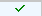
Die Datei konnte eingelesen werden
ü Die Datei konnte nicht eingelesen werden. Ein Grund dafür wäre dass es sich um eine ungültige XML-Datei handelt.
Ø Signatur
Die 583. Verordnung des Österreichischen Bundesministeriums für Finanzen vom 23.12.2003 besagt, dass die Vorsteuer-Anerkenntnis einer elektronischen Rechnung vom Nachweis der Echtheit der Herkunft und der Unversehrtheit des Inhalts dieser abhängig ist, und dass dieser Nachweis durch das Anbringen einer fortgeschrittenen elektronischen Signatur erbracht werden kann.
Diese Echtheit und Unversehrtheit wird überprüft und in dieser Spalte angezeigt
Dazu gibt es 2 mögliche Stati (Symbole):
ü Die Signatur wurde als gültig erkannt.
ü
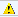
Die Signatur ist ungültig.
Zu beiden Möglichkeiten wird in der Statuszeile unterhalb der Tabellen eine weitere Info angezeigt:
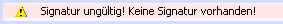
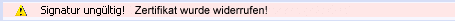
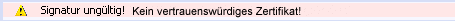
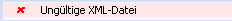
Damit eine Signatur als gültig erkannt wird muss ein so genanntes Root-Zertifikat installiert sein.
D.h. Root Certification Authorities bestätigen in letzter Instanz die Echtheit von Zertifikaten.
Siehe dazu auch im Kapitel "Manuelle Installation von Root-Zertifikaten"
Ø XML-Vorlage
Aus der Auswahllistbox kann eine Vorlage (XML-Vorlage) gewählt werden, die für den Import verwendet werden soll. Beim erstmaligen Einlesen der Dateien wird bereits versucht eine entsprechende XML-Vorlage zuzuweisen, bzw. bei jedem weiteren Einlesen der Dateien wird jene Vorlage zugewiesen die als Standardvorlage für das Importverzeichnis hinterlegt wurde.
Ø geprüft
Hier gibt es zwei mögliche Stati:
ü
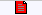
Die Datei kann noch nicht importiert werden (ungültige Datei; nicht alle Felder korrekt belegt; keine Vorlage ausgewählt;…)
ü Die Datei wurde überprüft und für "in Ordnung" befunden; d.h. jedoch noch nicht dass die Signatur gültig ist (sieh dazu Spalte "Signatur") und die Datei somit bereits importiert werden kann!
Buttons unterhalb der Tabelle
ü Selektion aufheben. Alle zur Auswahl gekennzeichneten Zeilen werden zurückgesetzt.
ü Selektion umkehren. Die Einstellungen der Checkboxen in der Spalte "Auswahl" werden ins Gegenteil verkehrt.
ü Vorlage aus dem Dateinamen übernehmen (Import-Vorbereitung): Die Importvorlagen werden entsprechend dem Dateinamen der Importdatei (die aus dem Menüpunkt "XML-Import vorbereiten" erzeugt wurde) zugeordnet.
Ansicht im rechten Fensterteil
Der rechte Teil des Fensters ist in 2 Register unterteilt.
Ø Beleg-Ansicht
Im Register "Beleg-Ansicht wird die "aktive" Datei im Internet Explorer-Fenster dargestellt. Um eine Anzeige im "Klartext" darzustellen (in der XML-Datei wird auf ein Stylesheet "verwiesen"), wird eine xslt-Datei - ein so genanntes Stylesheet - benötigt. Dieses muss im Importverzeichnis vorhanden sein.
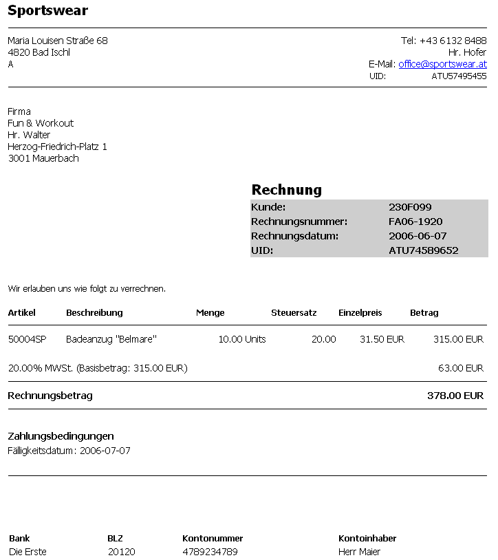
Wird in der XML-Datei auf ein Stylesheet verwiesen welches nicht vorhanden ist, so wird im Register "Belegansicht" eine entsprechende Meldung ausgegeben.
Ø XML-Ansicht
Im Register "XML-Ansicht" werden die in der "aktiven" Datei enthaltenen Tags in Tabellenform angezeigt. Zu beachten ist hierbei dass nur jene Tags angezeigt werden, für die es einen Wert oder ein Attribut gibt. D.h. z.B. dass auch die Tags für eine event. Signatur unterdrückt werden.
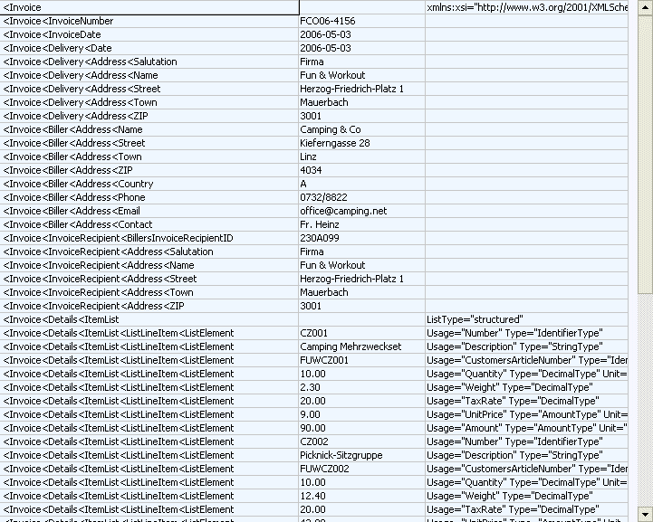
Tabelle im unteren Bereich des Fensters
In der Tabelle im unteren Bereich des Fensters werden jene Werte angezeigt, die beim Import der Datei übernommen werden.
D.h. im linken Teil der Tabelle (Vorschlag) werden die Werte lt. XML-Datei vorgeschlagen, welche durch die XML-Vorlage "umgewandelt" werden können und so auch im rechten Teil (Eingabe) dargestellt werden.
Ebenso werden evtl. Vorbelegungen lt. XML-Vorlage hier angezeigt.
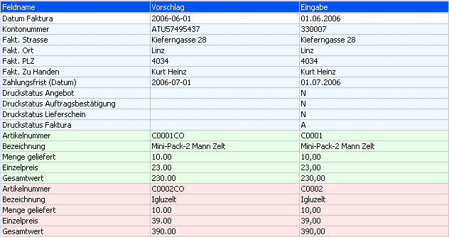
Die einzelnen Werte können in der Spalte "Eingabe" editiert, bzw. so genannte MUSS-Felder müssen befüllt sein; erst dann kann die Datei importiert werden.
Hinweis
Felder für die Kostenrechnung können beim Import von Buchungen leer bleiben.
Folgende "Logiken" sind beim Füllen der einzelnen Felder verwendet:
ü Kontonummer
(Personenkonto)
Beim Import von Belegen sowie Buchungen wird der übernommene
Wert der XML-Datei auch im Feld "Kontobezeichnung", "UID-Nummer", nummerischer
Teil der UID sowie der "GLN" (Global Location Number) gesucht und in weiterer
Folge die entsprechende Kontonummer übernommen.
Diese Logik greift für das Konto der Rechnungsadresse T025.C021, als auch für das Konto der Lieferadresse T025.C030. D.h. z.B. wird in der Datei die Kontenbezeichnung "Allsport GmbH" gefunden, so würde beim Import in den Demomandanten 300M die Kontonummer "330001" vorbelegt werden. Wird in keinem dieser Felder der importierte Wert gefunden, bleibt das Feld leer.
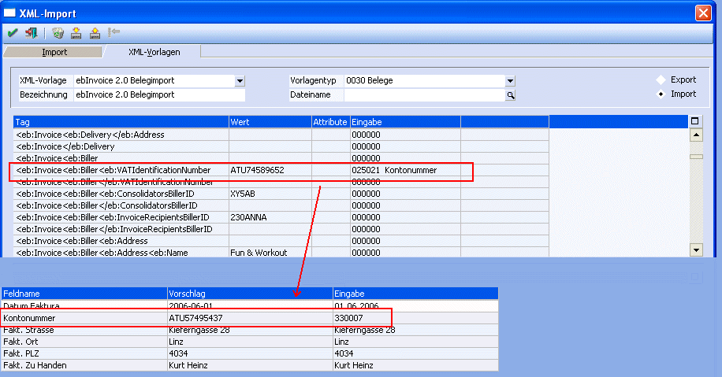
ü Kontonummer (Sachkonto)
Beim
Buchungsimport (im besonderen Fall von EBInterface) wird, im Falle eines Imports
eines Steuerprozentsatzes als Sachkontonummer, jenes Sachkonto (mit einer
entsprechenden Steuerzeile) vorgeschlagen, dass am häufigsten als Gegenkonto für
das eingetragene Personenkonto verwendet wurde.
ü Artikelnummer
Beim Import von
Belegen wird der übernommene Wert der XML-Datei auch im Feld
"Artikelbezeichnung" gesucht, und in weiterer Folge die entsprechende
Artikelnummer übernommen. Beispiel: wird in der Datei die Artikelbezeichnung "
Mini Fitness Center" gefunden, so würde beim Import in den Demomandanten 300M
die Kontonummer "20002" vorbelegt werden.
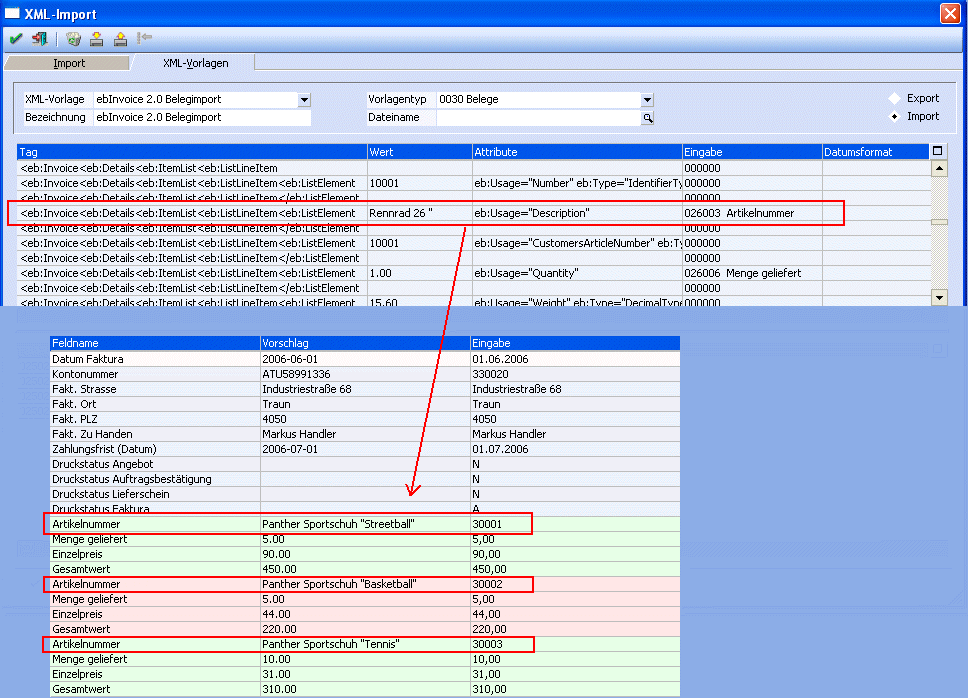
Unterhalb dieser Tabelle wird je nach Vorgang eine Statuszeile angezeigt, in der unter anderem auch die Fehlermeldungen dargestellt wird, wenn eine Datei nicht importiert werden kann.
Buttons
Ø  OK
OK
Durch Drücken des OK-Buttons kann der Import der Dateien gestartet werden.
Dabei werden die Dateien in ein Unterverzeichnis des Importverzeichnisses verschoben die, falls noch nicht vorhanden, mit dem Namen der verwendeten XML-Vorlage angelegt werden.
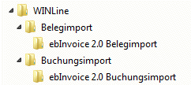
Werden XML-Dateien als Belege importiert so handelt es sich dabei um "nicht gerechnete/nicht gedruckte" Belege. Werden XML-Dateien als Buchungen importiert so werden die daraus entstehenden Buchungszeilen im jeweiligen FAKT-Monatsstapel (z.B. -7 Buchungsübernahme Juli) abgestellt.
Automatisch werden die XML-Dateien (inkl. Stylesheet falls vorhanden) im Archiv abgelegt. Als Schlagwörter werden dazu der Formularname (Name der XML-Import-Vorlage), die Kontonummer, das Tagesdatum, sowie die Schlagwörter "Signiert von" und "Signatur geprüft am" verwendet:
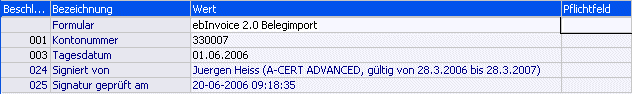
Beim Import von Dateien als Buchungszeilen wird im "Buchen (Dialog-Stapel)" in der Buchungszeile die Archivnummer des Archiveintrages angezeigt der mittels Button "Dokument zeigen" aufgerufen werden kann:
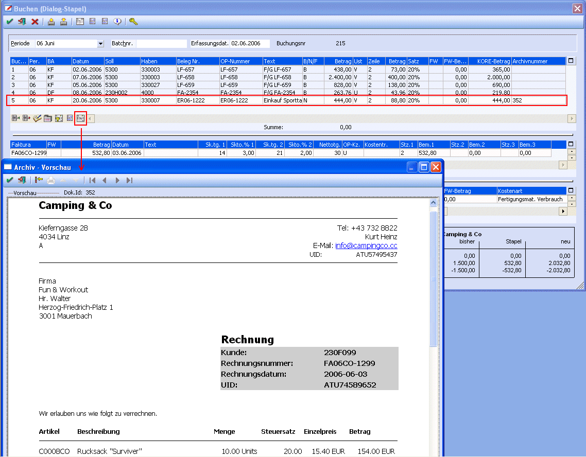
Ø  ENDE
ENDE
Mit dem Ende-Button wird das Fenster geschlossen. Alle getroffenen Einstellungen werden dabei verworfen.
Ø  Vorlage importieren
Vorlage importieren
Mittels "Vorlage importieren"-Button können, aus der WinLine mittels "Vorlage exportieren", exportierte Vorlagen wieder importiert werden. Dabei muss es sich um Dateien mit der Dateierweiterung "MXV" (MESONIC XML-Vorlage) handeln.